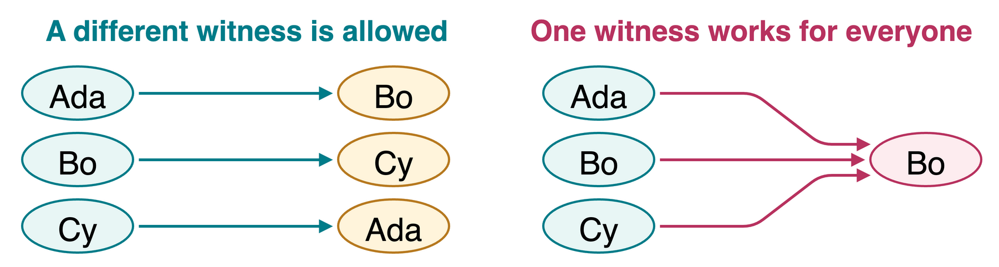
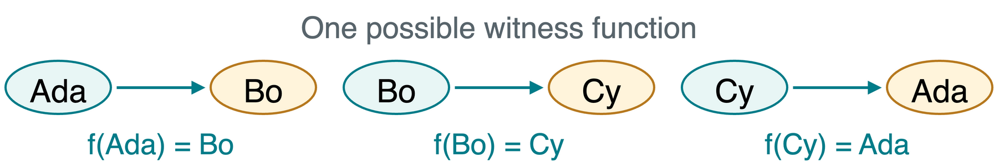
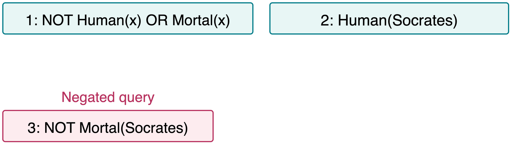
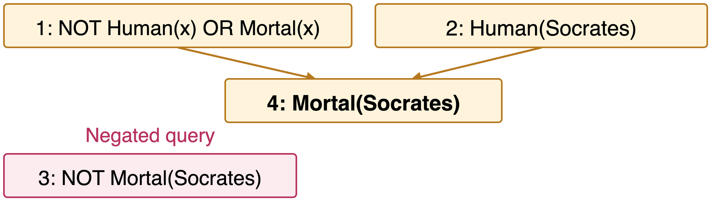
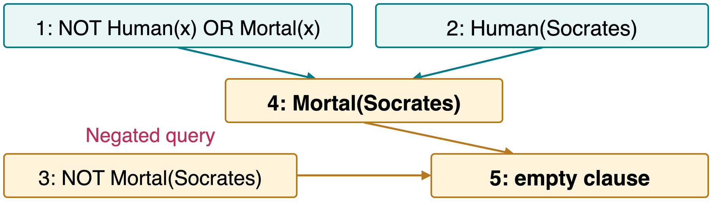

CS 463G & CS 663
(Intro to) AI
Lecture 18: First-Order Logic
Fall 2026
Objects and General Rules
First-order logic (FOL) describes objects and their relationships.
Instead of a separate rule for each person:
\text{HumanSocrates}\rightarrow\text{MortalSocrates}
write one rule about all people:
\forall x\,\bigl(\text{Human}(x)\rightarrow\text{Mortal}(x)\bigr).
The domain is the nonempty set of objects that variables range over. Here, choose all people.
Terms and Predicates
A term refers to an object. An atomic formula makes a claim about objects.
| Constant |
\text{Ada} |
A named person |
| Variable |
x |
A person whose value may vary |
| Function term |
\text{Mother}(\text{Ada}) |
An object: Ada’s mother |
| Predicate |
\text{Knows}(\text{Ada},x) |
A claim: Ada knows x |
Connectives \neg,\land,\lor,\rightarrow,\leftrightarrow combine formulas as before.
Does \text{Mother}(\text{Ada}) itself have a truth value?
No. It denotes an object. \text{Human}(\text{Mother}(\text{Ada})) makes a truth-valued claim about that object.
Universal and Existential Quantifiers
Domain: people. \text{Happy}(x) means “x is happy.”
Universal: \forall
\forall x\,\text{Happy}(x)
Every person is happy.
One unhappy person makes the statement false.
Existential: \exists
\exists x\,\text{Happy}(x)
At least one person is happy.
One happy person is a witness that makes it true.
The quantifier binds x in its scope. In \forall x\,(\text{Human}(x)\rightarrow\text{Mortal}(x)), the parentheses put both predicates in that scope.
Quantifier Order
Domain: people. An arrow from x to y means \text{Knows}(x,y).
\forall x\,\exists y\,\text{Knows}(x,y)
Each person knows someone. The witness may depend on x.
\exists y\,\forall x\,\text{Knows}(x,y)
One person is known by everyone. The same witness works for all x.

The left world satisfies only the first statement. The right world satisfies both.
Translating “Every” and “Some”
Domain: people. \text{Student}(x) and \text{Advisor}(y) identify roles. \text{Advises}(y,x) means “y advises x.”
Every Student Has an Advisor
\forall x\,\bigl(\text{Student}(x)\rightarrow
\exists y\,(\text{Advisor}(y)\land\text{Advises}(y,x))\bigr)
Some Student Has an Advisor
\exists x\,\exists y\,\bigl(\text{Student}(x)\land
\text{Advisor}(y)\land\text{Advises}(y,x)\bigr)
Use implication to restrict a universal rule to students. Use AND to require an existential witness to be a student.
Negating Quantifiers
Moving NOT inward flips the quantifier:
\neg\forall x\,P(x)\equiv\exists x\,\neg P(x) \neg\exists x\,P(x)\equiv\forall x\,\neg P(x)
“Not everyone knows someone.” Rewrite \neg\forall x\,\exists y\,\text{Knows}(x,y) with NOT next to the predicate.
\exists x\,\forall y\,\neg\text{Knows}(x,y)
There is a person who knows nobody.
“Not everyone” means at least one exception. It does not mean “nobody.”
Instantiation
Instantiation replaces a quantified variable with a term.
Universal Instantiation (UI)
\forall x\,\text{Human}(x)
Any particular instance follows:
\text{Human}(\text{Ada}).
The rule applies to every object, including Ada.
Existential Instantiation (EI)
\exists x\,\text{Happy}(x)
Give a witness a fresh name k:
\text{Happy}(k).
We have not learned whether that witness is Ada.
A fresh witness name adds no claim that it differs from all known people. It simply avoids assuming which person satisfies the existential.
Substitution and Unification
A substitution \theta=\{x\mapsto\text{Bo}\} means “replace x with Bo.”
\text{Knows}(\text{Ada},x)\theta=\text{Knows}(\text{Ada},\text{Bo})
Unification finds substitutions that make two expressions identical.
\text{Knows}(\text{Ada},x)\qquad\text{Knows}(y,\text{Bo})
| First |
Ada with y |
y\mapsto\text{Ada} |
| Second |
x with Bo |
x\mapsto\text{Bo} |
Apply \theta=\{y\mapsto\text{Ada},\ x\mapsto\text{Bo}\} to both expressions. Both become \text{Knows}(\text{Ada},\text{Bo}).
Most General Unifiers and Failure
A most general unifier (MGU) matches expressions without unnecessary bindings.
R(x,f(y))\qquad R(\text{Ada},f(z))
An MGU is \{x\mapsto\text{Ada},\ y\mapsto z\}. It leaves z unrestricted. Here R is a predicate and f a unary function.
| P(\text{Ada}) and P(\text{Bo}) |
Different constant symbols cannot match syntactically |
| P(x) and P(f(x)) |
Occurs check: x occurs inside f(x) |
The occurs check rejects x\mapsto f(x): ordinary first-order terms must be finite.
Skolem Constants and Functions
Skolemization replaces existential variables with fresh witness symbols.
| \exists y\,\forall x\,\text{Knows}(x,y) |
\forall x\,\text{Knows}(x,k): one fresh constant k |
| \forall x\,\exists y\,\text{Knows}(x,y) |
\forall x\,\text{Knows}(x,f(x)): a fresh function f |

The function’s arguments record the surrounding universal variables on which a witness may depend. Different inputs may still share a witness.
Clause Form for Resolution
Conjunctive normal form (CNF): AND of clauses, each an OR of literals. In FOL, atoms can contain terms, such as \text{Human}(x).
| 1 |
Remove \rightarrow and \leftrightarrow |
| 2 |
Move NOT inward, including across quantifiers |
| 3 |
Rename bound variables to avoid collisions |
| 4 |
Skolemize existentials with the correct dependencies |
| 5 |
Distribute OR over AND and list the clauses |
All remaining variables are implicitly universal. Skolemization preserves satisfiability. The other formula rewrites preserve equivalence.
One Rule, Two Clauses
Every student has an advisor. Abbreviate: S(x) = student, A(y) = advisor, T(y,x) = y advises x.
\forall x\,\bigl(S(x)\rightarrow\exists y\,(A(y)\land T(y,x))\bigr)
| Remove implication |
\forall x\,\exists y\,(\neg S(x)\lor(A(y)\land T(y,x))) |
| Skolemize y with f(x) |
\forall x\,(\neg S(x)\lor(A(f(x))\land T(f(x),x))) |
| Distribute OR over AND |
(\neg S(x)\lor A(f(x)))\land(\neg S(x)\lor T(f(x),x)) |
Two clauses, using the same f(x):
C_1=\{\neg S(x),A(f(x))\},\qquad C_2=\{\neg S(x),T(f(x),x)\}.
Refutation: A Complete Small Proof
Query: \text{Mortal}(\text{Socrates}). Add its negation as clause 3.



4. Parents 1 and 2, \theta=\{x\mapsto\text{Socrates}\}: derive \text{Mortal}(\text{Socrates}).
5. Parents 4 and 3, no binding needed: derive \bot, the empty clause.
The KB and negated query cannot both hold. Therefore \text{KB}\models\text{Mortal}(\text{Socrates}).
Quick Check
Domain: people. \text{Knows}(x,y) means “x knows y.”
For \forall x\,\exists y\,\text{Knows}(x,y), may we replace y with one fixed constant k? Why?
In general, no. Different people may need different witnesses. Use a fresh function f(x).
Do P(x,x) and P(\text{Ada},\text{Bo}) unify?
No. The first position requires x\mapsto\text{Ada}; the second requires x\mapsto\text{Bo}. One substitution cannot satisfy both.
Takeaways
- State the domain and define every predicate.
- Quantifier order determines whether a witness may depend on another variable.
- Unification uses one consistent substitution across each expression.
- Skolem terms record witness dependencies in clause form.
- Refutation proves entailment by deriving the empty clause from the KB and negated query.
Asset credits